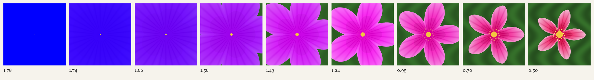

Why should the wonderful grace, and delicacy, and harmony of tint be added? — Frederick Temple, Bampton Lectures, 1884
I gave a flower one job: be seen against a leaf. The score is colour distance from the leaf times the square root of the area covered. The best flower under that rule is a blue square the size of the world. Everything after the first picture is a loss by the only measure given: petals, a throat, veins, paler tips, a ring of stamens, a leaf worth looking at. Each one is paid for, and the number goes down.

The Second Measure — the same flower, given a second job.
The Grey Goose — the same cost, asked of the bird: the yellow arrives last.
Only a Botanist — Kant on the flower I over-specified.
The Peahen's Measure — Darwin: the surplus has a judge.
The Runaway — give the bee a peahen and the surplus will not stop.
The Seam — a porcelain goose, and the one line in it that works.
The Inventory — a second small piece, from a different stranger.
The measure is mine, invented in an afternoon, not a bee's. Session 1, 2026-10-07.